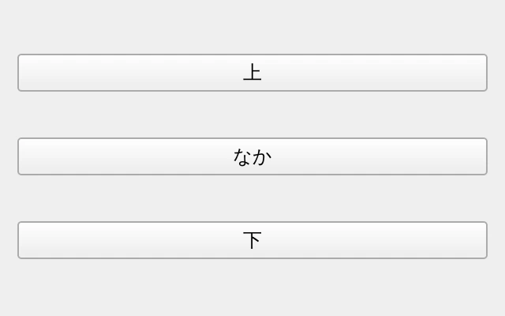
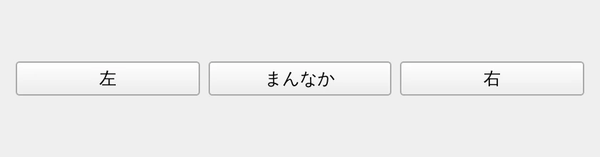
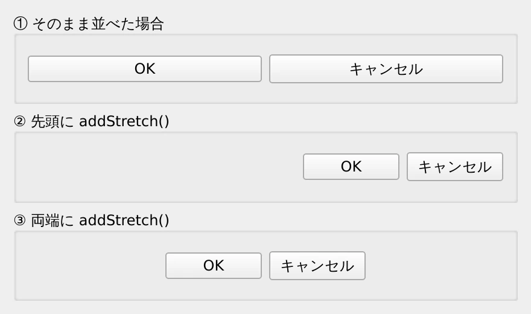
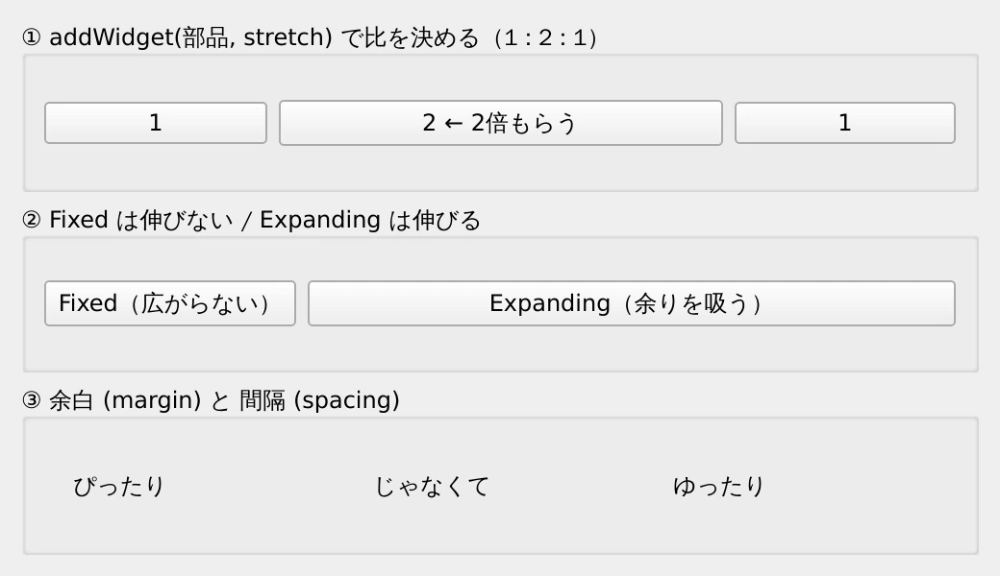
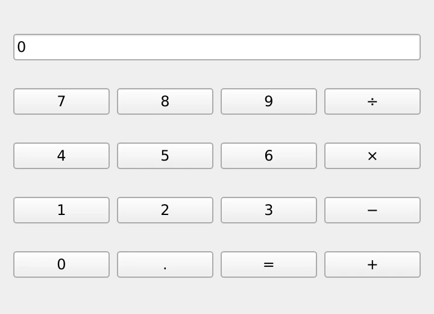
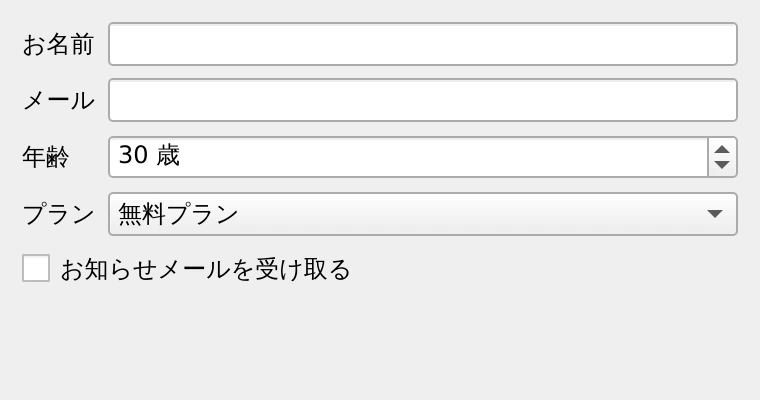
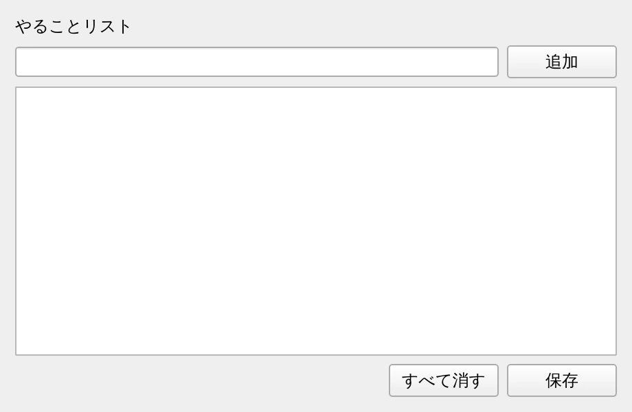

第 4 章·読了目安 18 分
第4章 レイアウト — 部品の並べ方
この教材でいちばん大事な章です。座標を指定しないのが Qt 流。縦・横・格子・フォームの 4 つと「伸び縮みの配分」を覚えれば大半の画面は作れます。
この章がこの教材でいちばん大事です。 ここを乗り越えると、あとは部品を差し替えるだけで大抵の画面が作れるようになります。
Qt では座標を書かない
GUI 作りというと「ボタンを x=20, y=50 に置く」と考えたくなりますが、Qt ではそうしません。 かわりに「縦に並べて」「横に並べて」と指示だけ出し、位置の計算は Qt に任せます。
これには理由があります。
- ウィンドウの大きさが変わっても、勝手に追従してくれる
- 文字の大きさや言語が変わっても崩れない（日本語と英語では文字幅が違う）
- OS ごとにボタンの標準サイズが違っても、そのまま動く
座標を直接指定する方法（move() や setGeometry()）もありますが、
上の 3 つがすべて自分の責任になります。使わないでください。
縦に並べる — QVBoxLayout
"""QVBoxLayout — 上から下へ縦に並べる。実行: python ch04_vbox.py"""import sysfrom PySide6.QtWidgets import QApplication, QPushButton, QVBoxLayout, QWidgetapp = QApplication(sys.argv)window = QWidget()window.setWindowTitle("QVBoxLayout")window.resize(320, 200)# 親ウィジェットを渡してレイアウトを作ると、その場で window に適用される。layout = QVBoxLayout(window)layout.addWidget(QPushButton("上"))layout.addWidget(QPushButton("なか"))layout.addWidget(QPushButton("下"))window.show()sys.exit(app.exec())
QVBoxLayout(window) のように引数にウィジェットを渡すと、その場でそのウィジェットに適用されます。
これが一番短い書き方です。
引数なしで作ってから、後で貼り付けることもできます。どちらでも同じです。
layout = QVBoxLayout()layout.addWidget(QPushButton("上"))window.setLayout(layout) # ← 後から貼る横に並べる — QHBoxLayout
"""QHBoxLayout — 左から右へ横に並べる。実行: python ch04_hbox.py"""import sysfrom PySide6.QtWidgets import QApplication, QHBoxLayout, QPushButton, QWidgetapp = QApplication(sys.argv)window = QWidget()window.setWindowTitle("QHBoxLayout")window.resize(420, 110)layout = QHBoxLayout(window)layout.addWidget(QPushButton("左"))layout.addWidget(QPushButton("まんなか"))layout.addWidget(QPushButton("右"))window.show()sys.exit(app.exec())
余白を配る — addStretch()
ここまでのサンプルでは、部品がウィンドウいっぱいに引き伸ばされていました。 実際の画面では「ボタンは右下にまとめたい」ことのほうが多いはずです。
そこで使うのが addStretch() です。
これは「中身のない、伸びるだけの部品」を置く命令だと考えてください。
バネを挟むイメージです。
"""addStretch — 「見えないバネ」で余白を配る。ダイアログの［OK］［キャンセル］を右に寄せる、あの定番の書き方。実行: python ch04_stretch.py"""import sysfrom PySide6.QtWidgets import (QApplication, QGroupBox, QHBoxLayout, QPushButton, QVBoxLayout, QWidget)app = QApplication(sys.argv)window = QWidget()window.setWindowTitle("addStretch でボタンを寄せる")window.resize(440, 260)outer = QVBoxLayout(window)# --- ① 何もしない: ボタンが横幅いっぱいに引き伸ばされる -------------------plain = QGroupBox("① そのまま並べた場合")row = QHBoxLayout(plain)row.addWidget(QPushButton("OK"))row.addWidget(QPushButton("キャンセル"))outer.addWidget(plain)# --- ② 先頭にバネ: ボタンが右に寄る ---------------------------------------right = QGroupBox("② 先頭に addStretch()")row = QHBoxLayout(right)row.addStretch() # ここにバネが入るrow.addWidget(QPushButton("OK"))row.addWidget(QPushButton("キャンセル"))outer.addWidget(right)# --- ③ 両端にバネ: ボタンが中央に寄る -------------------------------------center = QGroupBox("③ 両端に addStretch()")row = QHBoxLayout(center)row.addStretch()row.addWidget(QPushButton("OK"))row.addWidget(QPushButton("キャンセル"))row.addStretch()outer.addWidget(center)window.show()sys.exit(app.exec())
②の「先頭に addStretch()、そのあとボタン」は、
OK / キャンセルを右下にまとめる標準的な書き方です。覚えてしまってください。
伸び縮みの配分をコントロールする
「入力欄は広く、ボタンは必要な分だけ」のように、伸び方に差をつけたいことがあります。 方法は 2 つです。
方法 1: stretch 係数
addWidget() の第 2 引数に数字を渡すと、余りを分ける比率になります。
row.addWidget(edit, 1) # 余りをもらうrow.addWidget(button) # 省略 = 0 = 余りをもらわない方法 2: サイズポリシー
部品自身に「伸びたがり度」を設定する方法です。
| ポリシー | ふるまい |
|---|---|
Fixed | ちょうどよいサイズから変わらない |
Preferred | 基本はちょうどよいサイズ。既定値 |
Expanding | 余っている空間を積極的に吸う |
Minimum | 最小サイズは守り、必要なら伸びる |
"""伸び縮みの配分 — stretch 係数とサイズポリシー。「どの部品に余った空間を渡すか」を決めるのが、この 2 つ。実行: python ch04_sizepolicy.py"""import sysfrom PySide6.QtWidgets import (QApplication, QGroupBox, QHBoxLayout, QLabel, QPushButton, QSizePolicy, QVBoxLayout, QWidget)app = QApplication(sys.argv)window = QWidget()window.setWindowTitle("伸び縮みの配分")window.resize(520, 300)outer = QVBoxLayout(window)# --- ① stretch 係数: 余りを 1 : 2 : 1 の比で配る -------------------------box = QGroupBox("① addWidget(部品, stretch) で比を決める（1 : 2 : 1）")row = QHBoxLayout(box)row.addWidget(QPushButton("1"), 1)row.addWidget(QPushButton("2 ← 2倍もらう"), 2)row.addWidget(QPushButton("1"), 1)outer.addWidget(box)# --- ② サイズポリシー: 部品自身の「伸びたがり度」を変える -----------------box = QGroupBox("② Fixed は伸びない / Expanding は伸びる")row = QHBoxLayout(box)fixed = QPushButton("Fixed（広がらない）")fixed.setSizePolicy(QSizePolicy.Policy.Fixed, QSizePolicy.Policy.Fixed)row.addWidget(fixed)expanding = QPushButton("Expanding（余りを吸う）")expanding.setSizePolicy(QSizePolicy.Policy.Expanding, QSizePolicy.Policy.Fixed)row.addWidget(expanding)outer.addWidget(box)# --- ③ 余白そのものを調整する --------------------------------------------box = QGroupBox("③ 余白 (margin) と 間隔 (spacing)")row = QHBoxLayout(box)row.setContentsMargins(24, 8, 24, 8) # 枠の内側の余白（左, 上, 右, 下）row.setSpacing(24) # 部品どうしの間隔row.addWidget(QLabel("ぴったり"))row.addWidget(QLabel("じゃなくて"))row.addWidget(QLabel("ゆったり"))outer.addWidget(box)window.show()sys.exit(app.exec())
余白の調整 — margin と spacing
「なんとなく窮屈」「詰まって見える」は、たいてい余白で解決します。 Qt の余白は 2 種類しかありません。
layout.setContentsMargins(24, 16, 24, 16) # 左, 上, 右, 下layout.setSpacing(12) # 部品どうしの隙間
レイアウトを入れ子にすると、内側のレイアウトにも既定の余白が入って
二重に空いてしまうことがあります。
内側は setContentsMargins(0, 0, 0, 0) にしておくとすっきりします。
格子に並べる — QGridLayout
電卓のキーパッドのように、行と列で並べたいときに使います。
"""QGridLayout — 格子に並べる。電卓のようなキーパッドが得意。addWidget(部品, 行, 列) の行・列は 0 から数える。最後の 2 つの引数で「何行ぶん・何列ぶん占めるか」を指定できる。実行: python ch04_grid.py"""import sysfrom PySide6.QtWidgets import (QApplication, QGridLayout, QLineEdit, QPushButton, QWidget)app = QApplication(sys.argv)window = QWidget()window.setWindowTitle("QGridLayout")window.resize(300, 260)grid = QGridLayout(window)display = QLineEdit("0")display.setReadOnly(True)# 0 行 0 列に置き、1 行ぶん・4 列ぶんを占める。grid.addWidget(display, 0, 0, 1, 4)keys = [ ("7", 1, 0), ("8", 1, 1), ("9", 1, 2), ("÷", 1, 3), ("4", 2, 0), ("5", 2, 1), ("6", 2, 2), ("×", 2, 3), ("1", 3, 0), ("2", 3, 1), ("3", 3, 2), ("−", 3, 3), ("0", 4, 0), (".", 4, 1), ("=", 4, 2), ("+", 4, 3),]for text, row, col in keys: grid.addWidget(QPushButton(text), row, col)window.show()sys.exit(app.exec())
addWidget(部品, 行, 列, 行数, 列数) の後ろ 2 つを省くと 1×1 になります。
行・列は 0 から数えます。
入力フォーム専用 — QFormLayout
「ラベル : 入力欄」がずらりと並ぶ画面は、これを使うのがいちばん短くて確実です。
"""QFormLayout — 「ラベル : 入力欄」の入力フォーム専用レイアウト。自分でグリッドを組むより短く書けて、ラベルの位置も OS の作法に合わせて自動で決まる。実行: python ch04_form.py"""import sysfrom PySide6.QtWidgets import (QApplication, QCheckBox, QComboBox, QFormLayout, QLineEdit, QSpinBox, QWidget)app = QApplication(sys.argv)window = QWidget()window.setWindowTitle("QFormLayout")window.resize(380, 200)form = QFormLayout(window)form.addRow("お名前", QLineEdit())form.addRow("メール", QLineEdit())age = QSpinBox()age.setRange(0, 120)age.setValue(30)age.setSuffix(" 歳")form.addRow("年齢", age)plan = QComboBox()plan.addItems(["無料プラン", "標準プラン", "上位プラン"])form.addRow("プラン", plan)# ラベルなしで 1 行ぶんを占めさせることもできる。form.addRow(QCheckBox("お知らせメールを受け取る"))window.show()sys.exit(app.exec())
ラベルを左に置くか上に置くかは、実は OS ごとの作法が違います。
QFormLayout はそれを自動で判断してくれます。
また、ウィンドウが狭いときにラベルを上に折り返す機能も持っています。
自力でグリッドを組むと、これらは全部自分の担当になります。
入れ子にする — 実際の画面の作り方
現実の画面は、1 種類のレイアウトだけでは組めません。 「縦に積んだものの中に、横並びの列がある」という構造を作ります。
レイアウトの中にレイアウトを入れるときは、addWidget() ではなく
addLayout() を使います。
"""レイアウトの入れ子 — 実際の画面はこれで組み立てる。「縦に積んだものの中に、横並びの列がある」という構造を addLayout() で作る。実行: python ch04_nested.py"""import sysfrom PySide6.QtWidgets import (QApplication, QHBoxLayout, QLabel, QLineEdit, QListWidget, QPushButton, QVBoxLayout, QWidget)app = QApplication(sys.argv)window = QWidget()window.setWindowTitle("レイアウトの入れ子")window.resize(460, 300)# 一番外側は縦並び。outer = QVBoxLayout(window)outer.addWidget(QLabel("やることリスト"))# ① 入力欄とボタンの「横並びの列」を作る。input_row = QHBoxLayout()input_row.addWidget(QLineEdit(), 1) # 第2引数の 1 は「伸びる担当」の意味input_row.addWidget(QPushButton("追加"))# ② できた列を、外側の縦並びに差し込む。# ウィジェットではなくレイアウトなので addLayout を使う。outer.addLayout(input_row)outer.addWidget(QListWidget(), 1) # 残りの高さはリストに与える# ③ 下部のボタン列。バネで右に寄せる。button_row = QHBoxLayout()button_row.addStretch()button_row.addWidget(QPushButton("すべて消す"))button_row.addWidget(QPushButton("保存"))outer.addLayout(button_row)window.show()sys.exit(app.exec())
レイアウトに対して addWidget() を呼ぶとエラーになりますが、
もっと厄介なのは何も追加し忘れたときです。
作ったレイアウトを親に追加し忘れると、
エラーも警告も出ないまま、その部分だけ画面に現れません。
「作ったのに出てこない」ときは、まず addLayout() の呼び忘れを疑ってください。
画面を作るときの手順
いきなりコードを書き始めず、次の順で考えると迷いません。
- 紙に画面を描く。そして大きなかたまりで横線・縦線を引いてみる
- いちばん外側が縦か横かを決める。多くの画面は縦（
QVBoxLayout） - 各段の中を、さらに縦・横で切り分ける。切れなくなるまで繰り返す
- 「伸びてほしいのはどれか」を決める。そこに stretch を与える
- 最後にコードに落とす
次の画面を、レイアウトだけで組んでみてください（中身は空のボタンやラベルでかまいません）。
- 上部に検索欄と［検索］ボタンが横並び
- 中央に大きな一覧（
QListWidget）。ウィンドウを広げるとここだけが伸びる - 下部に［削除］［閉じる］が右寄せで並ぶ
答え合わせは ch04_nested.py とほぼ同じ形になれば正解です。
この章のまとめ
- 座標は書かない。
QVBoxLayout/QHBoxLayout/QGridLayout/QFormLayoutの 4 つで組み立てる。 addStretch()は「伸びるだけの見えない部品」。右寄せ・中央寄せはこれで作る。- 伸び方の配分は
addWidget(w, 係数)かsetSizePolicy()で決める。 - 余白は
setContentsMargins()（外周）とsetSpacing()（部品間）の 2 つだけ。 - レイアウトの中にレイアウトを入れるときは
addLayout()。追加し忘れると無言で消える。